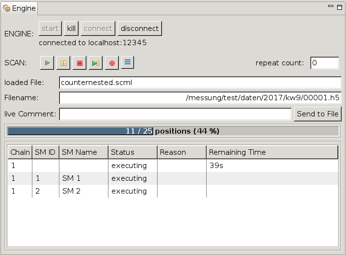

The Engine View allows monitoring and control of scans running in an engine process.

The first button row (ENGINE) controls the engine process itself while the second row (SCAN) controls the scan currently loaded. Below them several other informations are shown. The following subsections contain a detailed description of them.
There are four buttons whose function is described in the following table. Below them is a status label showing the host and port of the engine the Engine View is connected to.
| Button | Description |
|---|---|
| start | Creates an engine process with the parameters (e.g. the port) specified in the preferences and connects to it. |
| kill | Sends a request to the engine to terminate itself. |
| connect | Connects to an existing engine process at host:port as specified in the preferences |
| disconnect | Disconnects from the currently connected engine process. |
Several buttons are available to influence the execution of a scan. Their function is described in the following table.
| Button | Description |
|---|---|
| Play | Starts (or continues a paused) scan. |
| Pause | Pauses the scan. |
| Stop | stops the scan after finishing the current scan point. while pending positionings are ignored, post scan actions of the current scan module (and the parents if nested) are still executed. |
| Skip | finishes the current scan point, skips the remaining scan points of the current scan module, executes post scan actions and continues with the next scan module (if any) |
| Halt | Stops the scan and immediately stops all motor axes. |
| AutoPlay | if activated (toggle button) loaded scans (and iterations if repeat count > 0) start automatically |
Besides the available buttons there are some status fields as well as an option to repeat scans and to comment described below.
The Repeat Count displays the number of times the scan should be repeated. As long as the scan is not finished the repeat count is editable.
Shows the path and name of the scan file currently loaded/executing.
Shows the path and name of the file the measuring data is written to.
Allows writing (multiple) comments to current data file. When pressing the button „Send to File” the entered text is send to the engine (which saves it in the file).
Shows the progress of the current scan by showing the absolute and relative ratio of finished positions to the number of total positions. The background color fill also represents the relative ratio.
Shows the chains, scan modules and their states of the currently loaded scan. A remaining time as well as additional event infos (if any) are also shown.